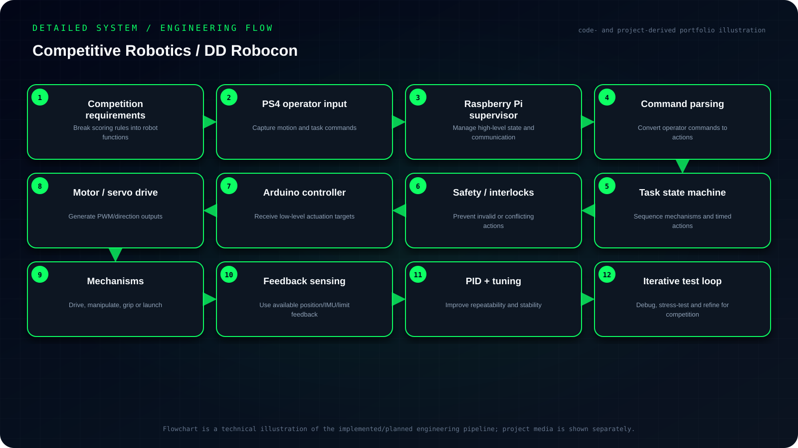

Objective
Develop a competition-robot control architecture that translates PS4 operator commands into coordinated mechanism actions through Raspberry Pi supervision, discrete task sequencing, Arduino actuation and iterative PID/control tuning.
- Convert competition rules and scoring tasks into explicit robot behaviors.
- Use Raspberry Pi as the high-level coordination layer and Arduino for low-level actuation.
- Combine manual PS4 input with repeatable task/sequence logic for mechanisms.
- Iteratively tune control, reliability and recovery under competition time and hardware constraints.
My contribution
- Worked with Raspberry Pi and Arduino-based control, including PS4 controller input, actuation routines and PID-oriented tuning.
- The work focused on integrating mechanisms into reliable task sequences rather than treating each actuator as an isolated subsystem.
System architecture
Operator input → Raspberry Pi control layer → command logic → Arduino/embedded actuation → motors and mechanisms → task feedback and operator observation.

Read the architecture as text
- Competition requirements — Break scoring rules into robot functions
- PS4 operator input — Capture motion and task commands
- Raspberry Pi supervisor — Manage high-level state and communication
- Command parsing — Convert operator commands to actions
- Task state machine — Sequence mechanisms and timed actions
- Safety / interlocks — Prevent invalid or conflicting actions
- Arduino controller — Receive low-level actuation targets
- Motor / servo drive — Generate PWM/direction outputs
- Mechanisms — Drive, manipulate, grip or launch
- Feedback sensing — Use available position/IMU/limit feedback
- PID + tuning — Improve repeatability and stability
- Iterative test loop — Debug, stress-test and refine for competition
Implementation
Worked with Raspberry Pi and Arduino-based control, including PS4 controller input, actuation routines and PID-oriented tuning. The work focused on integrating mechanisms into reliable task sequences rather than treating each actuator as an isolated subsystem.
Engineering decisions
The emphasis was on reliability and repeatability under time pressure, which is often more valuable in competition robotics than adding complex behavior that cannot be fully validated.
Challenges & debugging
Competition robots require mechanisms, electronics and control logic to work together reliably while the team iterates quickly around changing task strategies.
Validation
Validation was practical and competition-oriented: repeated mechanism execution, tuning response and checking that combined action sequences were robust enough for event use.
Outcome & boundaries
Integrated operator input, embedded actuation and repeatable mechanism routines for competition use.
Project sources
Implementation notes and available project sources. Public code is linked where available; descriptive diagrams are not independent validation.


{kind=link}